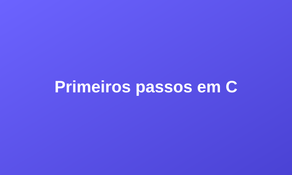
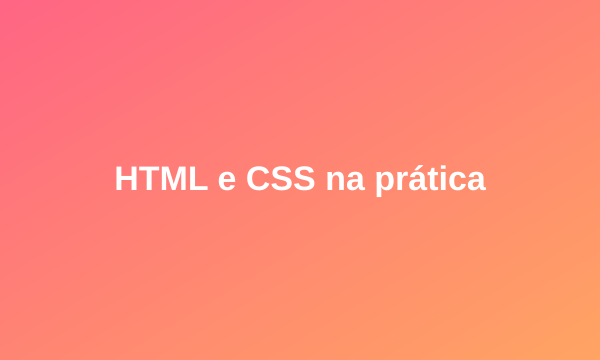
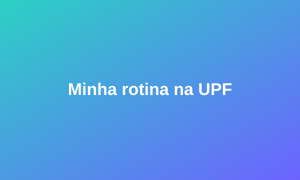

Programação
Meus primeiros passos em C
O que aprendi escrevendo meu primeiro "Olá, mundo!" e os erros que todo iniciante comete.
Ler mais →Bem-vindo(a) ao meu blog! Aqui eu compartilho a minha jornada como estudante de Ciência da Computação na UPF, dicas de programação, minhas receitas favoritas e um pouco do que eu aprendo no dia a dia.
Conheça minha história
O que aprendi escrevendo meu primeiro "Olá, mundo!" e os erros que todo iniciante comete.
Ler mais →
Como montei meu primeiro site do zero na disciplina de Web Lab e o que mais gostei.
Ler mais →
Como organizo os estudos, os trabalhos e ainda sobra tempo para os hobbies.
Ler mais →